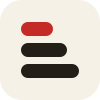

LinkedIn post image
Ink background, pill haze, mark in the center. Pair with a plain-text post.
2aLandscape · 1200 × 627
2bSquare · 1200 × 1200
2cLinkedIn banner · 1584 × 396
Social kit · turn 1
Profile pictures, X, Instagram, link previews, and the Chrome Web Store.
Built on the haze from the LinkedIn kit. Show safe zones in Tweaks draws the circle crop and the X avatar. Other kits: Brand guidelines · LinkedIn · Print and templates (next)
Profile pictures
400 × 400. Every platform crops to a circle, so the mark stays inside the middle 60%.
1aHaze400 × 400
1bDeep400 × 400
1cCream400 × 400
1dRed400 × 400
1eLectra400 × 400
1fPolya400 × 400
X
Header 1500 × 500, post image 1600 × 900.
1gHeader · haze1500 × 500
1hPost · product tip1600 × 900
Instagram
Post 1080 × 1080, portrait 1080 × 1350, story 1080 × 1920. Stories keep 250 px clear at the top and bottom.
1iPost · haze lockup1080 × 1080
1jPortrait · the three apps1080 × 1350
1kStory · night haze1080 × 1920
Link previews
1200 × 630, shown when someone shares a link.
1lcanvascope.org1200 × 630
1mdocs.canvascope.org1200 × 630
1naskpolya.com1200 × 630
Chrome Web Store
Small tile 440 × 280, marquee 1400 × 560, icon 128 × 128.
1oSmall promo tile440 × 280
1pMarquee1400 × 560
1qStore icon128 × 128
